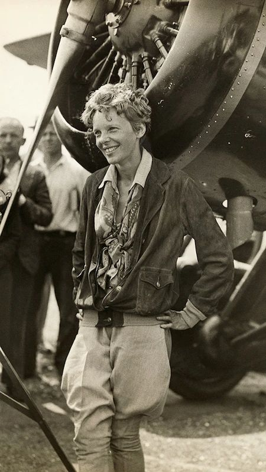

|  |
Early Life➷Amelia Earhart wasborn on July 24, 1897, in Atchison, Kansas.Amelia's fascination with flight took root at an early age. She had her first airplane ride in 1920, and this experience ignited a passion within her for aviation that would shape her destiny. In 1921, she took flying lessons and quickly proved herself as a talented pilot. Earhart worked various jobs to fund her flying lessons, displaying her unwavering commitment to achieving her dream. |
Record-Breaking Flights➷ In 1928, she became the first woman to fly across the Atlantic Ocean as a passenger, an achievement that catapulted her to international fame. However, she was determined to achieve even more.Then, in 1932 she became the first woman to fly solo across the Atlantic Ocean.This was a remarkable achievement in a male-dominated field and solidified her status as a aviator. |
|
¡! Advocate for Women in Aviation¡!Amelia Earhart's accomplishments were not limited to her own record-breaking flights. She was a passionate advocate for women in aviation and tirelessly worked to encourage and empower women to pursue careers in aviation and aerospace.Fun fact: She also co-founded an organization called the Ninety-Nines that provides networking, mentoring, and flight scholarship opportunities to recreational and professional female pilots |
♡ The Mysterious DisappearanceAmelia Earhart's life took a tragic turn when, in 1937, she embarked on an ambitious flight around the world. During the final leg of her journey, Earhart and her navigator, Fred Noonan, disappeared over the Pacific Ocean.I think due to the weather being Amelia had to fly in high altitude causing her oil tank to get empty quickly.The air traffic controller tried connecting to her but couldn't even tho they were very near.After the crash no one knows what happened . While many theories still roam around I find the coconut crab theory being quite believable to me .It indicates that she had been shredded to pieces by coconut crabs in a deserted island soon after the crash causing her death. I suggest watching these: The Mysterious Disappearance of Amelia Earhart | A Tale of Two Sisters | Absolute History Amelia Earhart + Coconut Crabs = The Answer??!! 👀 The Mysterious Disappearance Of Amelia Earhart |
||
༊ Legacy and InspirationAmelia Earhart's legacy endures as an inspiration to aspiring aviators, especially women, who dream of conquering the skies. She symbolizes the spirit of adventure and the boundless possibilities that await those who dare to dream.She serves as an example and role model to many young girls! |
☄ ConclusionAmelia Earhart's life and achievements continue to captivate the world's imagination. Her legacy heads ahead strong, serving as a beacon of hope and determination for generations of explorers and dreamers who look to the skies and wonder, just as she did, "What could be up there beyond the next horizon?" Amelia Earhart, the pioneering aviator, will forever remain a symbol of courage and the pursuit of the unknown. | ||
✼ List of webpages:
﹌﹌﹌﹌﹌﹌﹌﹌﹌﹌﹌﹌﹌﹌﹌﹌﹌﹌﹌﹌﹌﹌﹌﹌﹌﹌﹌﹌﹌﹌﹌﹌﹌﹌﹌﹌﹌﹌﹌﹌﹌﹌﹌﹌﹌﹌﹌﹌﹌﹌﹌﹌﹌﹌﹌﹌﹌﹌﹌﹌﹌﹌﹌﹌﹌﹌﹌﹌﹌﹌﹌﹌﹌﹌﹌﹌﹌